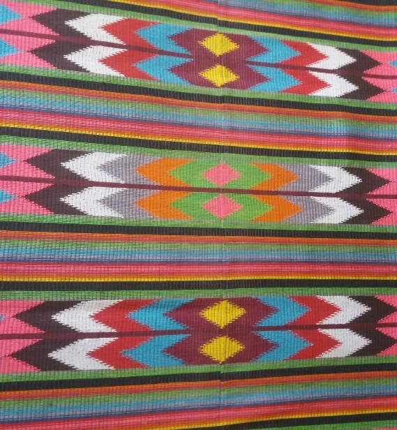
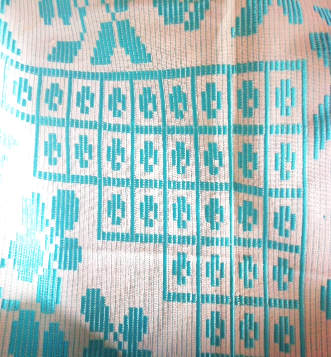
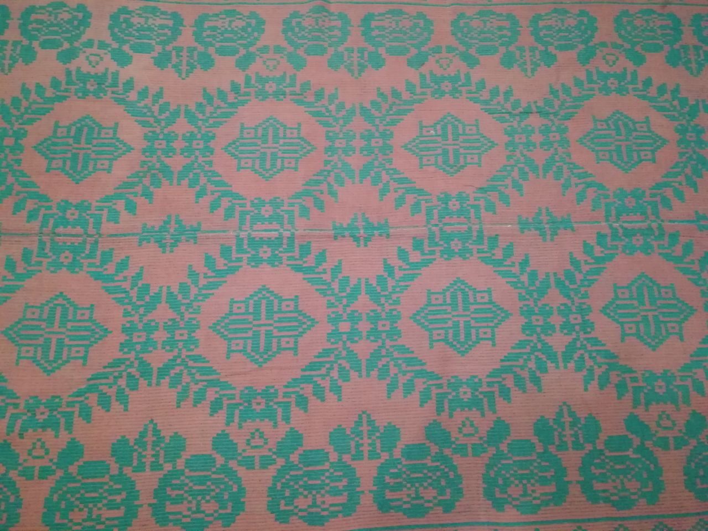
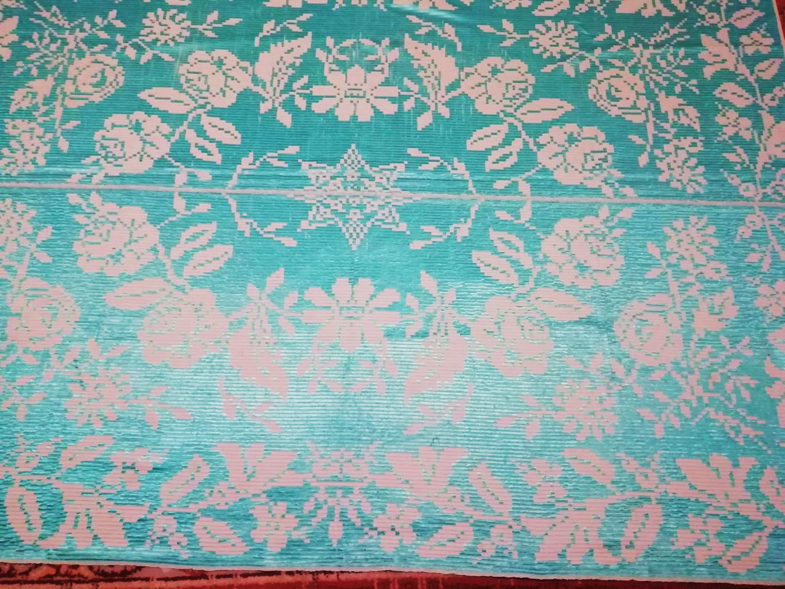

Народное ткачество – самобытное художественное явление в национальной культуре как белорусов, так и жителей Гродненской области. На протяжении многих веков приобретался и передавался из поколения в поколение ценный опыт по художественному оформлению домотканых изделий, развивались и совершенствовались виды и техники ткачества, формировались орнаментальные узоры. Период наивысшего расцвета ткачества Гродненщины приходится на конец XIX — начало XX в. Тканые изделия этого периода (обрядовые полотенца, традиционный костюм, различного вида покрывала) являются настоящей визитной карточкой конкретно Гродненского региона, а также и всех белорусов. Они отражают эстетический вкус народа, особенности исторического, экономического и культурного развития страны, взаимоотношения с культурой других этносов.
Ткачество – наиболее развитый вид народного творчества в Беларуси. Наши предки украшали ткаными узорами одежду, салфетки, занавески, наволочки, скатерти, постилки, ковры, дорожки. На территории Гродненской области, как и во всей Беларуси необычайно богатое наследие узоров народного орнамента. Изделия, созданные народными мастерицами, воплощают в себе богатые традиции орнаментального искусства.
Значительное влияние на изменение стилистики домотканого текстиля с конца XIX в. оказали орнаментальные мотивы и сюжеты для вышивания крестом, распространяемые печатной продукцией и получившие собирательное название «брокаровские» («мыльные») узоры. В ХХ веке начался отказ от следования художественному канону и значительная утрата этнической самобытности, локальной и региональной специфики белорусских народных тканей. Анализ брокаровской орнаментики и способов ее художественной адаптации в белорусских домотканых «постилках», «дыванах», «дзяружках» или «радюжках» (на Гродненщине прижились все варианты названия), предпринятый в искусствоведении, позволил сформулировать теоретико-методологические подходы к изучению актуальной исследовательской проблемы – визуализации новой культурной парадигмы в текстильном творчестве ХХ в.
Исследуется семантика яркого феномена современной народной культуры, для обозначения которого введено понятие «текстильный интерьер». Современный интерьер сельского дома представляет собой художественный сбор, в котором раскрывается образное содержание текстильных предметов, выполненных в различных техниках ткачества, вышивки, вязания кружева, аппликации. Декоративные ткани освоили практически все зоны жилого пространства, покрывают все предметы мебели. Тканые постилки и вышивки в сельской среде являлись копиями-заменителями настоящих ковров, картин и других предметов городского интерьера.
Постилки и дываны являются обязательной частью девичьего приданого на свадьбе. Ткачество передавалось из поколения в поколение, и каждая девушка, могла при помощи бабушки, матери или подруги, выткать постилку или полотно с простыми геометрическими узорами. Для более сложных конструкций узоров постилок обращаются к специальным мастерицам, потому что работа требовала углубленных знаний и навыков.
Беларусь до 1939 года была разделена на две части: западную и восточную. В довоенное временя ткацкие традиции Гродненщины отличались от остальных. Во время массовой послевоенной миграции населения некоторых украшений и технологий стали перемешать, а на восточных территориях началось все большее использование «западных образцов». В это время наблюдается активная миграция ткацких узоров, композиций и техник. Ткачество постилок приобретает творческий характер, делается хобби для женщин.
Переборная техника ткачества освоила изобразительные формы орнаментики и полихромию к середине ХХ века вытеснило многоремизную технику и стало доминировать в ткачестве белорусской деревни. Именно в переборном ткачестве произошло второе рождение полюбившихся в народе брокаровских мотивов. С распространением переборного ткачества тканый ручник уступил место постилке, которой была отведена главная художественно-декоративная роль в украшении сельского интерьера. Для изготовления постилок используются две техники: односторонний (однолицевой) и двухсторонний (двухлицевой) перебор, которые имеют разный диапазон художественных возможностей. Переходным вариантом от древней браной техники ткачества к освоению возможностей двухстороннего ткацкого перебора следует считать цельноузорные ткани с геометрическим орнаментом, получившие название «сейпак». Двухсторонний перебор (двухлицевой перебор с прижимной основой) позволяет создавать ткань с узорным застилом по всему полотну. Яркий пример развития этой техники – гродненские переборные постилки, которые выделяются продольной раппортной композицией, не свойственной традиционным белорусским самотканым покрывалам.
Судьба постилки связана с историей белорусской деревни и ее жителей. При нехватке денег женщины вернулись к ткачеству и как могли украшали свои дома. Постилка начинает быть главным тканым предметом в доме, декоративным центром интерьера крестьянского дома. Постилки висели на стенах, накрывали кровать - они становятся воплощением комфорта. Их цвета и образы воплощают мечты о здоровье, любви, счастливой жизни.
В начале 1970-х годов, часто в городских квартирах можно было увидеть диваны и постилки, размещенные на мебели, стенах, они были даже на сиденье машины. Новые горожане пришли из деревень в города с приданым: мать и бабушка наделили их богатством, в которое они вложили свои навыки и душу. Но изменения моды, развитие фабричного производства привели к тому, что постилки стали чуждые городскому интерьеру.
Геометрический орнамент на домотканых покрывалах встроен в структуру текстильного канона посредством композиции и ритма. Каноническим схемам орнаментальных композиций предметов народного ткачества Гродненской области присущи такие художественные качества, как уравновешенность, симметрия, геометрическая правильность, общая статика при внутренней ритмической организации составляющих частей. Разнообразие узоров орнамента обусловлено широким ассортиментом мотивов, предпочитаемых как белорусами, так и жителями Гродненщины.
Геометрический мотив – самый популярный вид и включает в себя: круги, звезды, ромбы, точки, ленты, линии, прямые, ломаные или зигзагообразные, шестиугольники, кресты.
Растительный мотив – встречается чуть реже: цветов, особенно розы и лотоса, листьев, плодов, чаще всего винограда.
Река Неман и его притоки всегда играли важную роль в жизни белорусов, которые селились по их берегам, плавали по ним на челнах, ловили рыбу. Мотив реки часто встречается в виде поперечных полос, которые имитируют рябь на воде. Вероятно, позже реку стали изображать и в виде дорожек яркого стрелоподобного орнамента, которые напоминают волны на воде от ветра.
|  |
Мотив хлеба имел вид ромбов, вставленных один в другой, или многогранников-кругов. Символ зерна – это крестик. Каждое зернышко-крестик могло быть акцентировано еще четырьмя крестиками и помещено в стилизованную растительную гирлянду. Такие элементы равномерно «рассыпали» по поверхности тканого или вышитого изделия на одинаковом расстоянии один от другого.
|  |  |
Узор труда изображали в стилизованном образе пчелы, которую в народном представлении связывали с трудолюбием и старанием, или условными символами.
Житень – один из наиболее популярных символов урожая, дух полей, который помогает росту и созреванию растений. Верили, что он может появиться перед хозяином, чтобы предупредить о приближающемся голоде. Житеня очень почитали в народе и обращались к нему с просьбами, нанося определенные узоры на постилки. Житень – розетка в виде ромба, от углов которого отходят по два стилизованных ржаных колоса. Он напоминает венок, который символизировал успешное окончание жатвы.
|  |
Богач. Богачем называли последний сноп со сжатой нивы, который перевязывали лентой, говорили заклинание и торжественно несли домой, чтобы поставить в красном углу. Так назывался и древний земледельческий итоговый праздник, который отмечался 21 сентября. Вариантов изображения Богача много, но чаще он имел вид розетки из четырех стилизованных колосьев, которые крестообразно расходятся от нее.
Спорыш (от слова «спорный», сдвоенный, например, колос) – бог плодородия и достатка. Иногда его соотносили со змеем. Он приносил богатый урожай и достаток в хозяйство. Узор Спорыша имеет вид розетки из четырех стилизованных листьев-колосьев, которые несколько отдалены от центральной розетки.
Его легко спутать со звездой – символом человека, но в изображении звезды листья-колосья тесно смыкаются в центре.
Рай, или Раек, - мифическое существо с человеческими чертами, который охраняет амбары до полного обмолота зерна. Рай часто упоминается в жатвенных песнях, связывается с богатством, зажиточностью и достатком. Узор Рая имеет вид розетки из четырех ржаных колосьев, которые пересекаются под прямым углом.
Капля-дождинка.. Дождь – важное условие для роста любого растения, поэтому, чтобы рожь хорошо росла, люди говорили заклинания на дождь, обращались к нему как к человеку, который может прискакать на коне. Узор капли-дождинки имеет вид поставленного на угол квадрата, скомпонованного из четырех одинаковых треугольников. Один из этих треугольников должен обеспечивать урожай на ниве, другой – сена на лугу, третий – полноводность рек, четвертый – хорошую древесину в лесу [22].
Полевик – мифический опекун полей, лугов и труженика-хлебороба. Представлялся седым стариком с посохом в руках или, наоборот, статным юношей с волосами цвета спелой нивы. Узор Полевика состоит из геометрических фигур самой разной конфигурации: квадратов, прямоугольников, восьмиугольников и ромбов.
Узор родной матери. Изображая мать, мастерицы делали восьмиконечную звезду – символ ее любви и милосердия, гирлянду из цветов вокруг нее – изображая ее величие, венок – славу матери и любовь детей к ней. Узор родной матери – это звезда, помещенная в звезду большего размера, а затем в восьмиугольную окантовку.
Мать-Земля-кормилица. Земля, которая кормит, была основой жизни крестьянина и в народном представлении обожествлялась. Богиню Мать-Землю часто изображали в виде ромба с отростками, направленными внутрь композиции. Символ Земли-кормилицы, как нивы, в народном ткачестве имел вид ромба, составленного из маленьких квадратиков или ромбиков, которые как зернышки, которыми равномерно засевали поля заботливые руки крестьянина. Образ родной земли изображался композицией из кругов и квадратов. Любовь к родной земле отображалась в виде розеток, обрамленных гирляндами цветов. Иногда гирлянду из цветов заменял круговой мотив. Прямоугольник из квадратов или квадрат означал нашу Землю-кормилицу, четыре квадратика вокруг нее – узор солнца.
Среди всех рассмотренных самотканых постилок-покрывал Гродненской области (около 40 штук) необходимо выделить ряд постилок, вся поверхность которых занята различными узорами. В них раскрываются различные жизненные ситуации. Например, в постилке с изображением голубя и голубки, узорах женской доли, узорах матери-земли-кормилицы выражается мысль, желание девушки не только быть любимой, выйти замуж за «добрага хлопца», но и сделать свою крестьянскую долю счастливой, получив хороший надел земли. Соответственно, для своего адекватного выражения она требует также применения различных узоров.
В Щучинском районе, в деревне Красное в 1960- 1965 годах ткачиха Гресь Ирина Станиславовна создала текстиль, который бережно хранят ее внуки, чтобы передать своим детям. Они уверены, что постилки хранят душевное тепло, энергию и любовь их бабушки, способствуют их благополучию. На каждом изделии, созданном Гресь Ириной Станиславовной, присутствует узор Богача и узор реки. Благополучие семьи она связывает с рекой, что обьяснимо: земельный участок семьи находился на берегу реки Костеневка.